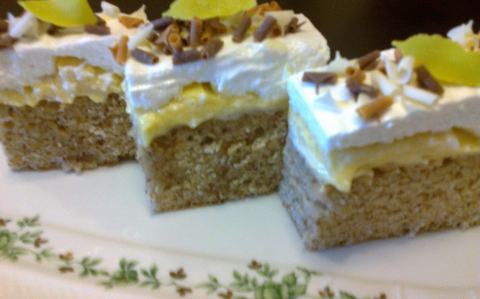

Nem egyszerű az elkkészítése, de a végeredmény iseni!
Próbáljátok ki Ti is!:)

Hozzávalók
Tészta:
30 dkg kristálycukor
4 FUCHS SZABADTARTÁSOS TOJÁS
10 ek víz
10 dkg darált dió
6 gramm sütőpor
20 dkg búzaliszt
só
Krém:
2,5 dl tej
3 ek búzaliszt
18 dkg porcukor
25 dkg margarin
3 FUCHS SZABADTARTÁSOS TOJÁSsárgája
20 gramm vaníliás cukor
Máz:
3 FUCHS SZABADTARTÁSOS TOJÁSfehérje
15 dkg porcukor
Díszítéshez:
ízlés szerint csokoládéforgács
Elkészítése
A tojások fehérjét csipetnyi sóval és a cukorral kemény habbá verjük, majd egyesével
hozzákeverjük a tojások
sárgáját,
vizet, darált diót végül a liszttel elkevert sütőport forgatjuk bele óvatosan.
A tepsit sütőpapírral kibéleljük, a masszát beleöntjük és 180 fokra előmelegített sütőben kb 30
percig
(tűpróbáig)
sütjük.
A krémhez a lisztet a tojások sárgájával fehéredésig keverjük, majd apránként a tejet hozzáadjuk
és jól
elkeverjük.
Alacsony hőfokon sűrűre főzzük a krémet, majd hidegre hűtjük.
A margarint a kétféle cukorral habosra keverjük és a kihűlt krémmel összekeverjük, az egészet
kihabosítjuk.
A mázhoz a tojások fehérjét a cukorral gőz felett kemény habbá verjük.
A kihűlt diós piskótára halmozzuk a krémet, melyet egyenletesen elkenünk. Erre kerül a felvert
hab, melyet
ízlés szerint
csokoládéreszelékkel dekorálunk.
Pár órára hűtőbe rakjuk. Tálaláskor hosszúkás szeletekre vágva kínáljuk!